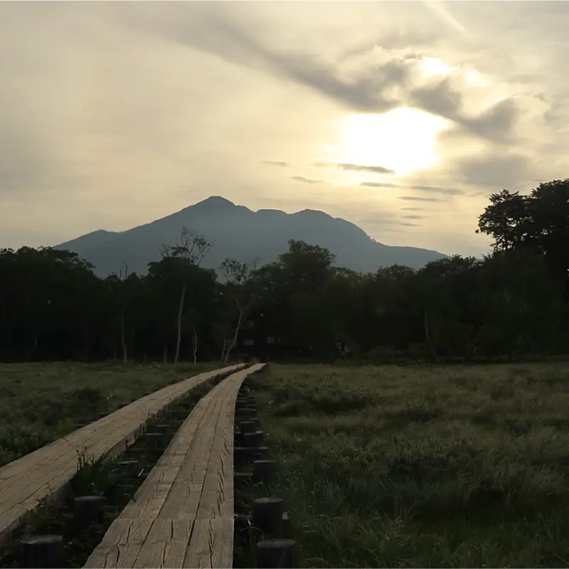
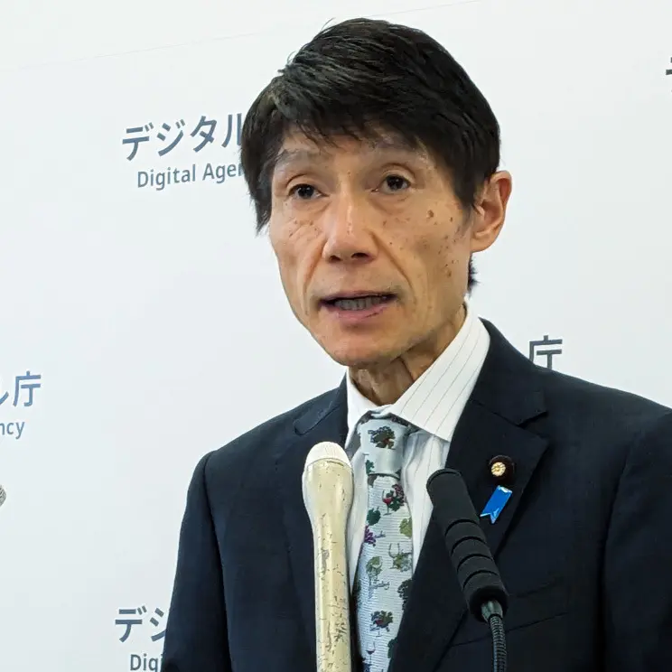

【速報解説】NVIDIAトップの電撃復帰は、トランプの秘密工作 発行日時：2026-11-24 05:30:04 JST
NewsPicks原文を読む
あなたに関係ありそうな理由 半導体企業の経営判断に政権の働きかけが及ぶとき、安全保障、株価、取締役会の独立性がどう絡むかを考える材料になる。
概要 The New York Timesによると、ジェンスン・フアン氏は11月23日の市場開始前にNVIDIAの社長兼CEO、取締役へ復帰した。記事は、トランプ大統領とバンス副大統領が取締役会と非公開に調整し、政権が復帰に安全保障上の懸念はないと伝えた経緯を報じる。米当局は、フアン氏の家族の情報機関との関係や、シンガポール企業による半導体密輸疑惑を懸念していたとされるが、いずれも記事中で確定した事実ではなく、調査は続いている。フアン氏側とNVIDIAはコメントせず、取締役会は新たなコンプライアンス委員会を設けた。
トランプ氏はフアン氏の経営が米国経済に重要だと公に述べ、復帰後の株価上昇も歓迎した。企業トップの復帰を政権が後押ししたことで、投資家には政策リスクの低下と映る一方、取締役会が独自に評価・判断したのかという問いが残る。安全保障上の疑念が解消したのか、政権が市場に好ましい結論を示したのかは、記事だけでは判定できない。政権の説明、会社の判断、株式市場の反応を一つの結論にまとめず、誰がどの根拠で決めたのかを追う必要がある。
表示コメントの反応も一様ではない。AI競争で米国企業を率いるフアン氏の復帰を市場の安心材料と見る声がある一方、政治が取締役会へ影響を与えること、独立性や情報開示、未解決の安全保障上の懸念を問う意見もあった。ここで確認したコメントから分かるのは論点の幅であり、疑惑の真偽や政府の判断根拠を裏づける証拠ではない。外部リンクを含むコメントは扱わず、リンク先の情報も参照していない。
見るべきなのは復帰後の株価だけではない。新設委員会が何を調べ、取締役会がどの情報に基づいて復帰を決めたのか、継続中の調査結果をどう開示するのかが、企業統治への信頼を左右する。重要企業と政権の連携は産業政策として機能しうるが、判断の記録と監督が曖昧なままでは、政治的な影響力と取締役会の責任の境目が見えにくくなる。市場が歓迎した決定ほど、意思決定の手続きも確認したい。委員会の構成や独立性、利益相反への対応も公表されれば、取締役会の判断を後から検証する材料が増える。調査結果だけでなく、監督の仕組みが形だけでないかも追いたい。
仕事や会話で使える一言 トップ人事のニュースは、株価と同時に取締役会が判断した根拠も追いたい。
【星野佳路】日本の観光業に、イノベーションは起きていない 発行日時：2026-11-24 05:30:00 JST
NewsPicks原文を読む

あなたに関係ありそうな理由 訪日客数の伸びを産業の革新と同一視せず、自然資源の保全、地域の受け入れ、観光収入の使途を一体で考えられる。
概要 星野リゾート代表の星野佳路氏は、日本の観光産業に革新が起きているとは言いにくいと語る。訪日客が約4300万人に達した伸びは、ビザの緩和や円安の影響が大きく、宿泊・観光事業そのものの変化とは異なるという見立てだ。次の成長機会として挙げるのは、国立公園などの自然観光。訪問先を大都市に集中させず、自然を楽しむ滞在を増やす考えである。ただし全国に薄く投資するのではなく、少数の公園へ人材と資本を集め、他地域が参考にできる運営モデルを先に作るべきだと主張する。
尾瀬の「LUCY」は、テントや従来型山小屋にためらいのある人にも自然を楽しんでもらうため、快適性を加えた小規模な宿泊運営の試みとして紹介された。尾瀬を選んだのは、将来の大規模な観光地として最有力だったからではなく、企画を早く進められたためだという。この例から、星野氏の提案は自然を施設で埋めることではなく、保全と利用を両立する運営を試すことにある。区域の決め方やインフラ整備など、利用ルールを見直す余地にも触れるが、具体的な拡大計画や環境指標が確定したわけではない。
宿泊税や入域料についても、徴収すること自体を目的にせず、地域の観光戦略と自然保全の計画を先に示し、集めた資金の使い道を説明できることが条件になる。表示コメントでは、限られた資源を重点地域へ配分する考えに賛同する声がある一方、「イノベーション」の意味や環境負荷、民間事業者の役割、実行に必要な資金と責任体制を問う意見が出ていた。コメントは期待と懸念を示す反応であり、環境への影響を測定した調査結果ではない。
観光客数の増加を成果とするだけでは、地域の暮らしや自然が受け入れられる範囲を把握できない。少数の地域で試すなら、滞在時間や消費額に加え、自然環境の変化、地元の雇用・調達、住民の負担、税収の配分まで確かめたい。星野氏の提案は、自然観光へ資源を移す方向を示す一方、選定基準や運営責任をどう設計するかは地域ごとに詰める必要がある。訪日客数の記録だけでなく、試行後に何が改善したかを見ることが、産業の革新を測る手がかりになる。繁忙期の混雑や交通への負荷も、地域が受け入れられる規模を測る項目になる。
仕事や会話で使える一言 観光の成長は、来訪者数だけでなく自然と地域に残る価値で確かめたい。
【パランティア】銀行を守る技術が「全員監視」を可能にした 発行日時：2026-11-24 05:30:02 JST
NewsPicks原文を読む
あなたに関係ありそうな理由 データ統合ソフトの価値だけでなく、顧客組織が利用権限・監査・停止権をどう設けるかを検討できる。
概要 記事は書籍の内容をもとに、Palantirのデータ統合技術が金融機関のサイバー防御に役立つ一方、社内の同僚情報を検索できる状態も生みうる経緯を紹介する。JPMorganでの事例では、複数のデータをつなぐ力に加え、顧客側がどの利用者に何を見せるか、アクセスをどう記録するかがリスクを左右した。問題の中心は、ソフトが何をできるかだけではない。導入先の組織が権限を適切に絞り、利用状況を監査し、目的外利用を止められるかにある。
記事は、ニューオーリンズ警察の予測警察活動をめぐり、Palantirのプライバシー担当者が導入に反対した例や、新型コロナ対策でのデータ統合が行政の調整を助けた例も扱う。同じ統合能力が公衆衛生にも監視にも使われるため、用途と監督者の違いが結果を変える。さらに、ICEの捜査システムが移民取り締まりに利用された過去の契約と、強制送還を迅速化する新しい「ImmigrationOS」の取り組みを区別して記述する。2025年に政府の「マスターデータベース」支援を否定した件では、書籍の著者は政治利用への懸念に十分答えていないと評価している。
表示コメントには、統合データが救命や防御に役立つ点を認めつつ、全員を追跡できる社会への懸念を示す声があった。利用前の警告やログが実際にアクセスを抑制できるのか、誰が監査し、異議を申し立てられるのかという問いも出ている。ソフトの通知機能だけで利用を制御できるとは限らず、顧客組織の規程、独立した監督、違反時の停止措置が一緒に機能するかを考える議論である。外部リンクのあるコメントは読まず、論点の根拠にも使っていない。
導入を検討する組織は、役割ごとの最小権限、検索目的の記録、定期監査、違反の調査手順、契約を止める権限を事前に決める必要がある。特に行政や金融のように影響範囲が広い用途では、情報をつないだ後に誰がアクセスを承認し、誤った利用をどの速さで止められるのかを、運用開始前に確かめたい。危険な用途を技術だけで完全に除けるとは限らない。利便性を語るとき、顧客側の責任と影響を受ける人の救済経路も同じ計画に含めるべきだ。影響を受ける人が説明や訂正を求める窓口も、あらかじめ明確にしたい。
仕事や会話で使える一言 データを統合する前に、アクセス記録を誰が監査し、誤用を止めるか決めておく。
【豊田通商・今井斗志光】人を伸ばす「越境」のつくり方 発行日時：2026-11-24 05:30:03 JST
NewsPicks原文を読む
あなたに関係ありそうな理由 異なる地域や事業へ人を送り出す経験を、配置転換で終わらせず、育成と組織の知識共有につなげる方法を考えられる。
概要 豊田通商の今井斗志光氏は、マダガスカルでの赴任経験を振り返り、慣れた環境の外へ出ることが人の成長を促すと語る。現地では日本の本社で通用する手順をそのまま持ち込めず、相手の事情を理解しながら仕事を進める必要があった。インタビューが示す「越境」は、海外勤務だけを指すのではなく、所属組織や専門分野、文化の異なる相手と仕事をする経験を含む。経験のない領域で判断することが、本人の視野を広げる機会になるという考え方だ。
今井氏はキャリアの節目として、20代は現場で基礎を学び、30代は組織を動かす立場を経験し、40代にはより広い世界観を得るという見取り図を語る。これは全員に当てはめる年齢別の標準コースというより、現場、マネジメント、視野の拡張という異なる学びを積む発想として読める。大規模な総合商社では、部門や国をまたぐ経験をどう作り、現場で得た知識を本人だけのものにせず組織に戻すかが課題になる。異動させるだけで成長が生まれるわけではなく、本人を支える上司や役割設計も要る。
豊田通商は約7万人のグループを抱える。記事は、AIが情報整理や定型業務を担う時代にも、人が異なる利害をつなぎ、現地の状況に合わせて動く力は重要だと示す。AIとの比較は人間の価値を抽象的に称えるためではなく、異なる地域で判断し関係を築く仕事をどう伸ばすかという問いにつながる。記事ページでは表示コメントが確認できず、「アプリでさらにコメントを見る」と案内されていたため、読者の反応は要約に加えていない。
人材育成の施策を考える際は、海外や他部門への派遣人数だけでなく、本人にどんな課題と裁量が渡されたか、帰任後に経験がどの職務へ生かされるかを見たい。越境経験が一部の社員だけの特典になれば、組織全体の能力向上にはつながりにくい。挑戦先の安全や生活支援、現地社員との対等な協働、知識を共有する仕組みまで設計してこそ、個人の経験を会社の学習に変えられる。今井氏の話は、配置を人材育成として機能させる条件を見直すきっかけになる。年齢や職種によって必要な経験は異なるため、この見取り図を昇進の条件へ直結させない配慮も必要だ。その学びを評価する方法も用意したい。
仕事や会話で使える一言 異動の数より、現場の経験を次の役割と組織の学びへつなぐ仕組みを見たい。
【大臣発言】政府システム、脆弱性が見つかれば「一時停止」も 発行日時：2026-11-24 16:30:00 JST
NewsPicks原文を読む

あなたに関係ありそうな理由 脆弱性が見つかった際の一時停止を、決定者・基準・代替手段まで含む事業継続の設計として考える材料になる。
概要 デジタル庁の政府共通基盤（GSS）のファイル共有サービスで、不正アクセスの疑いが生じた。記事によると、不審なアクセスを確認したのは11月12日だが、疑われる活動は7月30日に始まっていた。対象ファイルの件数や内容、侵入経路は明らかにされていない。記事は今回の件とは別の過去事案にも触れ、6月25日に異常を検知し、7月9日にVPN機器の脆弱性を悪用した侵入が分かったケースでは、約24万6000件の個人情報が漏れた可能性があると説明する。二つの事案を混同せず、今回の被害範囲は未公表として扱う必要がある。
古川デジタル相は、脆弱性が見つかった場合にシステムを一時停止することも選択肢になると述べた。一方、会見では、どの深刻度で誰が停止を決めるのか、復旧まで何を代替手段とするのかは定義されなかった。11月6日のサイバーセキュリティ対策パッケージは、脆弱性への対応が済むまで自治体にサービス停止の検討を求めている。停止は攻撃を防ぐ手段になり得るが、行政のファイル共有や住民向け手続きも止める可能性があり、判断を先送りする影響と、止める影響の双方を管理しなければならない。
表示コメントでは、民間企業にも関係する論点として、責任者と事前合意した規則を定める必要が挙がった。期限の迫った申請をどう救済するか、代替システムや業務継続計画（BCP）を準備するか、影響を小さくする分散構成を使えるかという意見も見られた。議論が示すのは、一時停止の是非を一般論で決める難しさである。利用者への影響を具体的に洗い出し、停止と継続の判断材料を平時に用意することが求められる。外部リンクを含むコメントは読まず、論点や根拠には使っていない。
企業や行政の運用担当者は、脆弱性の重大度、悪用の兆候、保護対象の情報、停止による住民・顧客への影響を並べて判断できる基準を作りたい。決定者を明確にし、停止中の代替受付、期限の延長、復旧条件、関係者への連絡まで訓練しておけば、緊急時に現場が単独で抱え込まずに済む。今回の公表で被害範囲や侵入経路が示されていない以上、原因や影響を推測で補わず、追加説明と再発防止策を待つ必要がある。セキュリティと業務継続の両方を事前に設計する課題が浮かぶ。
仕事や会話で使える一言 停止を選べるよう、判断基準と利用者向けの代替手段を先に整えたい。